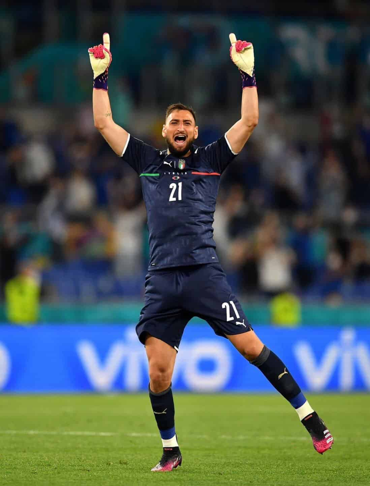

Gianluigi Donnarumma (Castellammare di Stabia, Italia, 25 de febrero de 1999) es un futbolista italiano que juega como guardameta en el París Saint-Germain F. C. de la Ligue 1 de Francia. Es internacional absoluto con la selección de fútbol de Italia y hermano menor del también futbolista Antonio Donnarumma. En 2021 ganó el trofeo al mejor portero del año.
Después de un breve paso por las divisiones inferiores del A. C. Milan, Donnarumma llegó al primer equipo en la segunda mitad de la temporada 2014-15, mientras Diego López luchaba por quitarle la titularidad a Christian Abbiati. Debutó en un partido de pretemporada contra el Real Madrid que terminó 0:0. En la tanda de penaltis, Donnarumma le atajó el disparo a Toni Kroos, pero falló un penalti que fue detenido por Kiko Casilla, lo que acabó dándole la victoria al equipo español. Unas semanas más tarde tuvo la oportunidad de atajar otra tanda, esta vez contra la U. S. Sassuolo Calcio en un partido amistoso por el Trofeo TIM. Donnarumma atajó dos penales y el A. C. Milan ganó por 5:4. En la temporada 2015-16, con tan solo dieciséis años de edad, consiguió ganarse la titularidad debido a su gran rendimiento, por lo que Diego López pasó a ser portero suplente. Donnarumma finalizó la temporada con treinta partidos de Serie A, en los que permitió veintinueve goles. El 23 de diciembre de 2016, el Milan le ganó la Supercopa de Italia a la Juventus de Turín, en un partido donde Donnarumma le atajó un tiro decisivo a Paulo Dybala en la tanda de penales, después de empatar 1:1 en 120 minutos de juego. A pesar de ser pretendido por clubes como París Saint-Germain y Real Madrid, en julio de 2017 renovó su contrato con el A. C. Milan hasta el 30 de junio de 2021. Al mismo tiempo, el club anunció el fichaje de su hermano, Antonio. En mayo de 2021 se dio a conocer que abandonaba el club por no llegar un acuerdo para la renovación de su contrato que expiraba el 30 de junio. El 14 de julio, tras haber ganado unos días atrás la Eurocopa, firmó con el París Saint-Germain F. C. por cinco años.
Donnarumma se convirtió en el futbolista más joven en debutar con la selección sub-21 de Italia con 17 años y 28 días. En agosto de 2016 se convirtió en el futbolista más joven en ser convocado por la selección italiana (con 17 años, 6 meses y 2 días) desde 1910, cuando Rodolfo Giovannelli fue llamado a los dieciséis años. El guardameta debutó con la squadra azzurra el 1 de septiembre con tan solo 17 años, 6 meses y 7 días en una derrota 3:1 ante Francia. El 4 de junio de 2021 fue convocado para participar en la Eurocopa 2020. Italia llegó a la final y se llevó el título después de superar a Inglaterra en una tanda de penaltis en la que le paró el último lanzamiento a Bukayo Saka. Tras el encuentro fue nombrado mejor jugador de la competición. Durante el torneo contribuyó a que Italia lograra superar el récord de más minutos seguidos sin encajar un gol, dejando la cifra en 1168 minutos.